before 6bc47e51fc95c153a71e36df411546ef60d3908d
after c45ea534a405303890f4795e03412cffb849b1a8
相同输入、1440×900、100% 缩放。点击图片查看原始 PNG；HTML 可独立打开。完整观察记录 · 环境与输入摘要 · 几何对照 · 工程验证摘要
本次逐图检查涵盖节点标签与泳道标题，没有关系标签案例。自动回执与维护者验收分开；维护者批准仍待进行。
六条回线改走节点右侧，完整连接 A/B/C/D；左侧四个标题区域清空，节点标签未被遮挡；可区分平行回线。
| 修复前 | 修复后 |
|---|---|
| light · 独立 HTML · 全部尺寸与回执 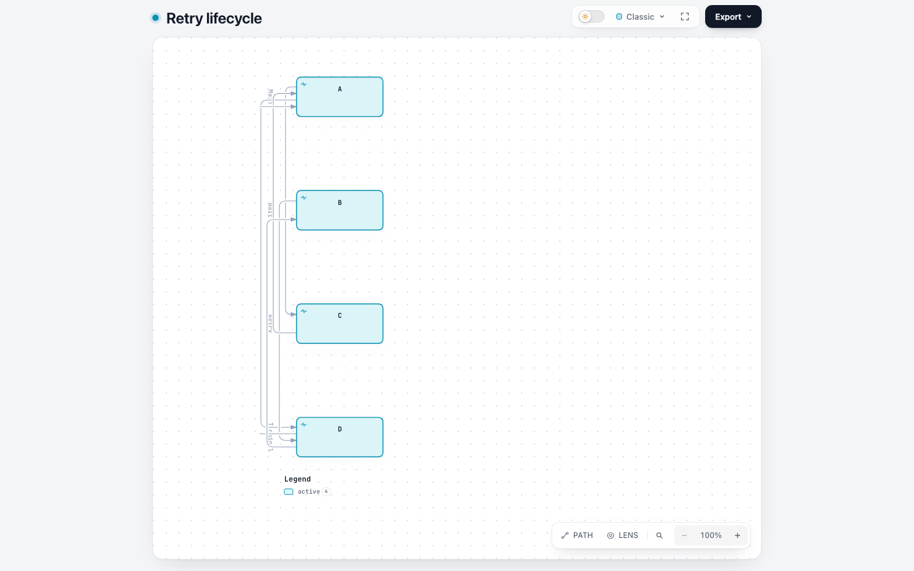 | light · 独立 HTML · 全部尺寸与回执 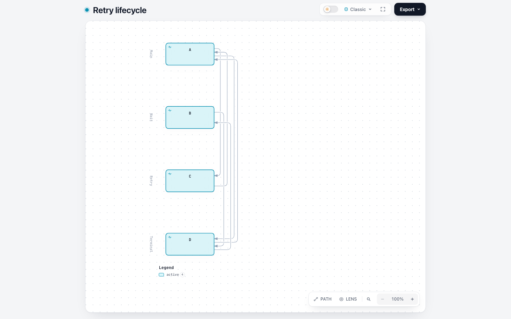 |
| dark · 独立 HTML · 全部尺寸与回执 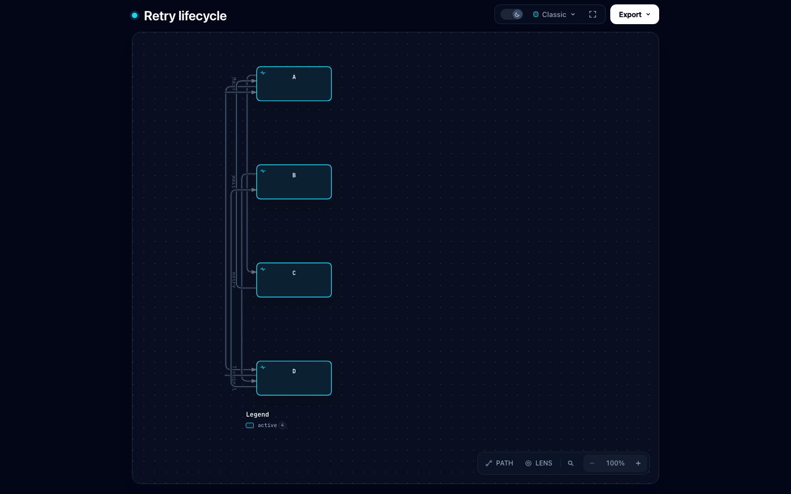 | dark · 独立 HTML · 全部尺寸与回执 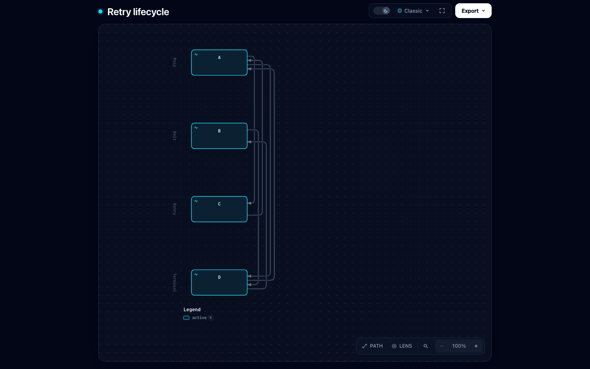 |
十条线在 A/C 右側紧凑排列，长竖线和弯折均完整可见；与 B 节点、M 的绿色初始圆点及箭线保持可见间隔，泳道和节点标题未被线覆盖。
| 修复前 | 修复后 |
|---|---|
| light · 独立 HTML · 全部尺寸与回执 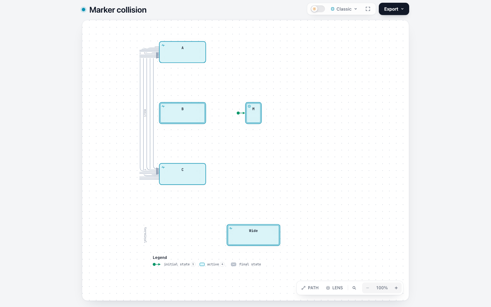 | light · 独立 HTML · 全部尺寸与回执 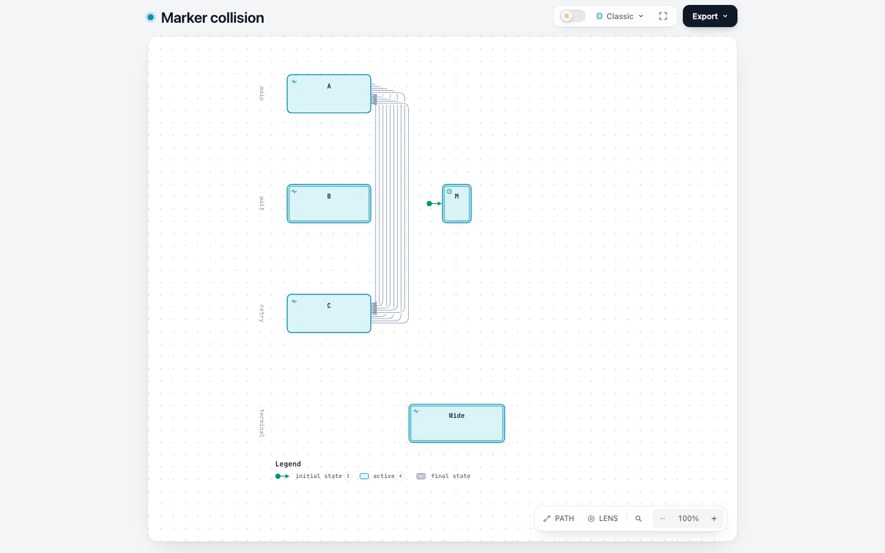 |
| dark · 独立 HTML · 全部尺寸与回执 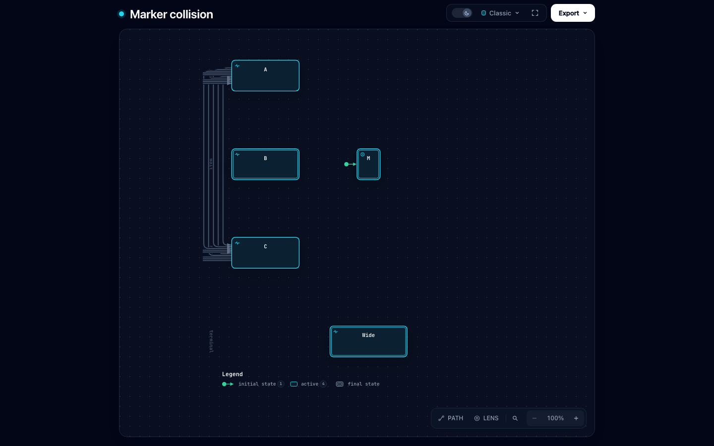 | dark · 独立 HTML · 全部尺寸与回执 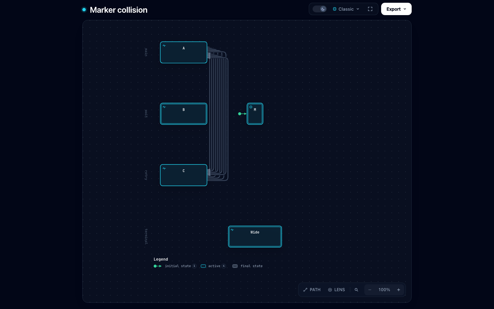 |
十条线绕到宽中间节点 b 的右边，最内侧轨道也与 b 的右边框有明显间隔；所有回线和 a/c 箭头完整，未穿过 b 或下方 Outside 节点，左侧标题区域清空。
| 修复前 | 修复后 |
|---|---|
| light · 独立 HTML · 全部尺寸与回执 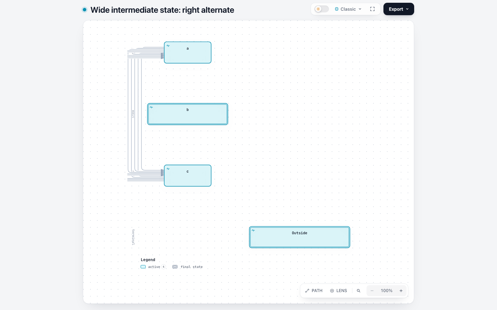 | light · 独立 HTML · 全部尺寸与回执 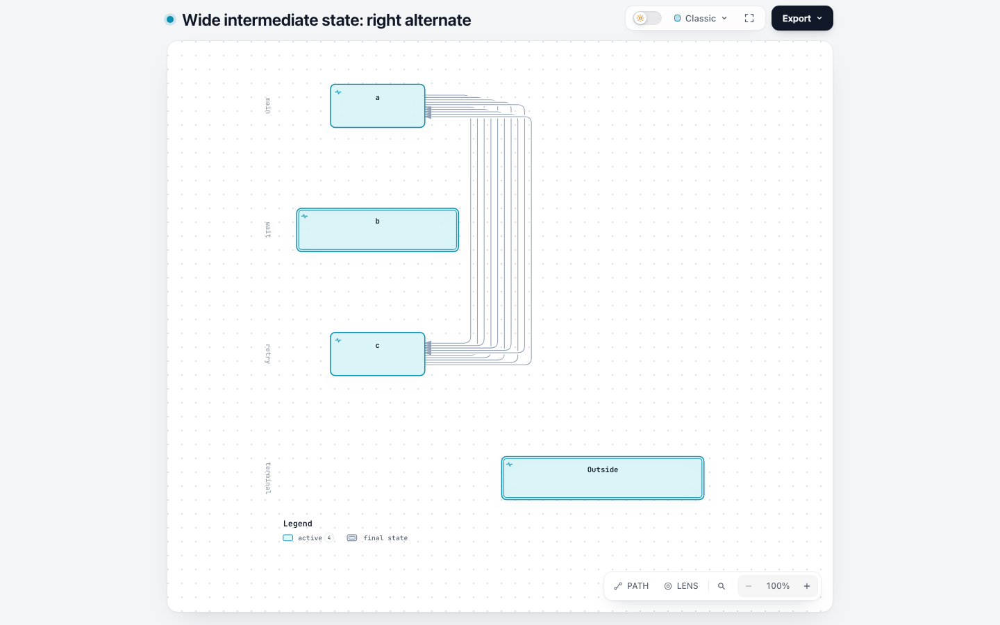 |
| dark · 独立 HTML · 全部尺寸与回执 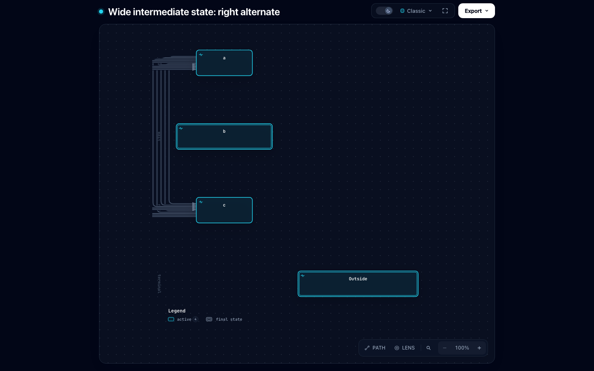 | dark · 独立 HTML · 全部尺寸与回执 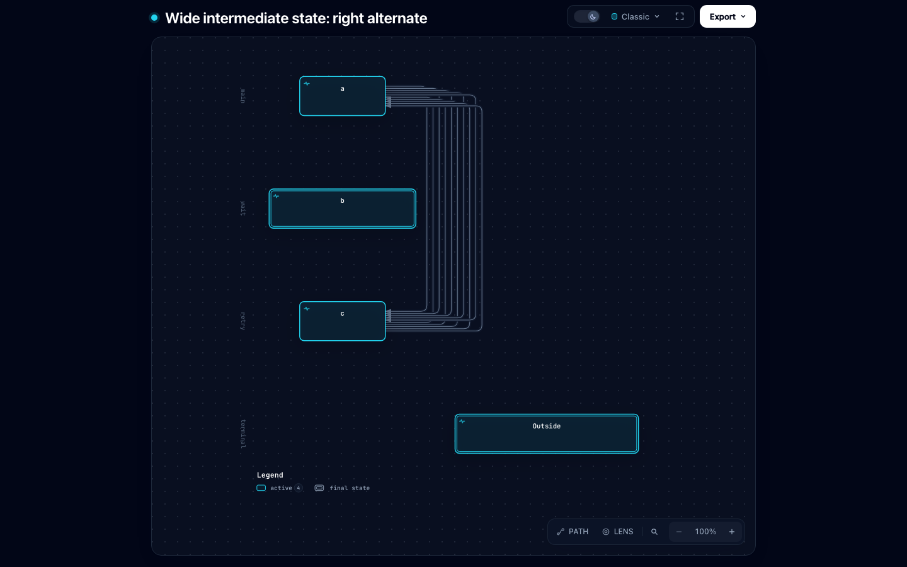 |